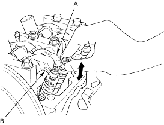
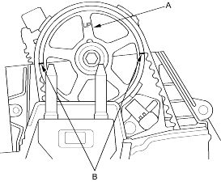

- Loosen the valve on the regulator and apply the specified air pressure:
Specified Air Pressure:
250 kPa (2.5 kgf/cm2, 36 psi)
NOTE: If the synchronising piston does not move after applying air pressure, move the primary or secondary rocker arm up and down manually by rotating the crankshaft counter-clockwise.
- Move the intake secondary rocker arm (A) for the No. 1 cylinder. The primary rocker arm (B) and secondary rocker arm should move together.
- If the intake primary rocker arm does not move, remove the primary and secondary rocker arms as an assembly and check that the piston in the secondary and primary rocker arms move smoothly. If any rocker arm needs replacing, replace the primary and secondary rocker arms as an assembly and retest.

- Remove the special tools.
- After inspection, check that the MIL does not come on.
- Remove the ignition coil cover, then remove the four ignition coils, refer top the '01 Civic Shop Manual on this CD (see page 4-25).
- Remove the throttle cable clamps and harness holder from the cylinder head cover (see step 21 on page 6-14).
- Remove the cylinder head cover (see step 22 on page 6-14).
- Remove the grommet from the upper cover and disconnect the TDC sensor connector. Remove the upper cover, refer to the '01 Civic Shop Manual on this CD (see step 1 on page 6-57).
- Set the No. 1 piston at TDC. The ''UP'' mark (A) on the camshaft pulley should be at the top and the TDC marks (B) on the pulley should line up with the top edge of the head.
